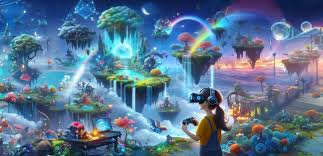

Oyun Teknolojilerindeki Yenilikler
Bir oyun dünyası bir hayal dünyasıdır ve genellikle alternatif bir kurgusal evrene yerleştirilir ve amacı oyuncuyu içine çekmek ve etraflarındaki her şeyi etkileyen kararları ve eylemleriyle bu oyun dünyasını kontrol ediyormuş gibi hissettirmektir. Bir oyun dünyası, bir oyun tahtasından büyük bir şirket tarafından geliştirilen üçlü-A oyununa kadar birçok şey olarak sınıflandırılabilir. Her şey oyunun kendisindeki ayrıntı düzeyine bağlıdır. Bir oyun dünyasında çok fazla düşünce ve ayrıntı olmalı ve oyun dünyasının ayrıntılı olup olmayacağına karar vermek oyun bilgisine bağlıdır, bilgi yoksa dünya da yoktur. Büyük ve geniş oyun dünyaları yaratmaya gelince genellikle 20-100 kişilik bir ekip çalışır ve tek bir oyun dünyasını yaratır.
Bir oyun dünyasının en önemli kısmı, onun arkasındaki ve onu bir arada tutan hikayedir. Bir oyun dünyası yaratırken, genellikle dünya için bir hikaye yaratarak ve ardından onun etrafında inşa ederek başlamak en iyi fikirdir veya örneğin, önceden belirlenmiş bazı dönüm noktalarınız varsa, bunları yerleştirin ve ardından dünyayı onun etrafında inşa etmeye devam edin ve tüm dünyanızı birbirine bağlayın, böylece sorunsuz bir şekilde akar. Oyun dünyanızda, bölgeler ve diyarlar olmalı ve hepsi birbirinden farklı olmalı, tıpkı farklı ülkelerle çevrili olduğumuz ve herkesin farklı olduğu gibi. Oyununuzda, tam işlevli bir dünya hissi verecek şekilde farklı ırklar ve insan tipleri olmalıdır.